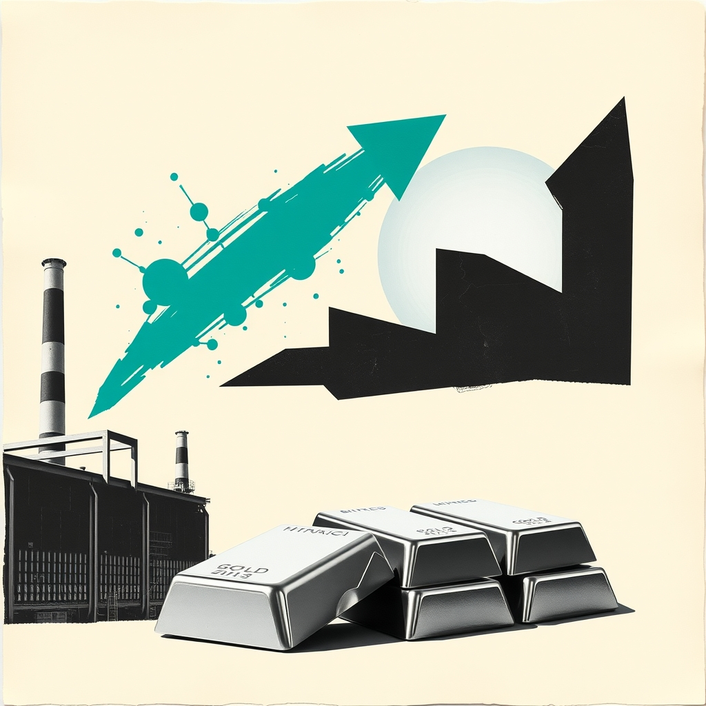

Peak Rate Prospects Shift Focus Across Precious Metalsអត្រាការប្រាក់អាចឈានដល់កម្រិតកំពូល ខណៈតម្រូវការលោហៈប្រែប្រួល
XAU/USD impact: ◆ Mixedផលប៉ះពាល់លើ XAU/USD: ◆ ចម្រុះ

Market expectations suggest interest rates may be nearing a peak while silver gains attention. Sustained economic resilience could reshape demand dynamics between gold and industrial metals.
ការពិភាក្សាលើទីផ្សារបង្ហាញថាអត្រាការប្រាក់អាចនឹងឈានដល់កម្រិតកំពូល ខណៈ silver កំពុងទាក់ទាញចំណាប់អារម្មណ៍។ ការណ៍នេះមានសារៈសំខាន់ចំពោះមាស ព្រោះកំណើនសេដ្ឋកិច្ចបន្តអាចបង្វែរលំហូរទុនរវាងទ្រព្យសម្បត្តិសុវត្ថិភាព និងលោហៈឧស្សាហកម្ម។
Market discussions are focusing on the prospect that interest rates may be reaching their peak, while silver has begun signaling technical buying interest. Alongside this potential turning point in borrowing costs, market analysis suggests that silver could capture greater appeal than gold if the economy continues to expand, primarily due to silver's substantial industrial uses.
ការពិភាក្សានៅលើទីផ្សារកំពុងផ្តោតលើលទ្ធភាពដែលអត្រាការប្រាក់អាចនឹងឈានដល់កម្រិតកំពូល ស្របពេលដែល silver បានចាប់ផ្តើមបង្ហាញសញ្ញានៃការទិញ។ ស្របជាមួយចំណុចរបត់នៃថ្លៃដើមខ្ចីប្រាក់នេះ ការវិភាគលើទីផ្សារបង្ហាញថា silver អាចនឹងមានភាពទាក់ទាញជាងមាស ប្រសិនបើសេដ្ឋកិច្ចនៅតែបន្តដំណើរការទៅមុខយ៉ាងរលូន ដោយសារតែ silver មានការប្រើប្រាស់ច្រើននៅក្នុងវិស័យឧស្សាហកម្ម។
For XAU/USD, a peak in interest rates alters the fundamental environment for non-yielding assets by curbing upward pressure on yields. When interest rates stop climbing, the opportunity cost of holding gold generally stabilizes. However, the transmission channel is complicated by the divergence between precious metals: gold functions primarily as a monetary store of value, whereas silver shares monetary traits but carries heavy industrial demand. Consequently, sustained economic momentum can tilt investor preference toward cyclical industrial metals rather than purely defensive assets.
សម្រាប់គូជួញដូរ XAU/USD លទ្ធភាពដែលអត្រាការប្រាក់ឡើងដល់កម្រិតកំពូល បានផ្លាស់ប្តូរបរិយាកាសគ្រឹះសម្រាប់ទ្រព្យសកម្មដែលមិនផ្តល់ការប្រាក់ តាមរយៈការកាត់បន្ថយសម្ពាធលើទិន្នផល។ នៅពេលអត្រាការប្រាក់លែងកើនឡើង ការចំណាយលើឱកាសនៃការកាន់កាប់មាសជាទូទៅមានស្ថិរភាព។ ទោះជាយ៉ាងណា យន្តការបញ្ជូនបន្តនេះមានភាពស្មុគស្មាញដោយសារភាពខុសគ្នារវាងលោហៈមានតម្លៃទាំងពីរ ដោយមាសដើរតួចម្បងជាទ្រព្យសម្បត្តិរក្សាតម្លៃរូបិយវត្ថុ ខណៈ silver មានតម្រូវការឧស្សាហកម្មយ៉ាងខ្លាំង។ ដូច្នេះ ប្រសិនបើសេដ្ឋកិច្ចនៅតែមានសន្ទុះខ្លាំង ចំណង់វិនិយោគិនអាចងាកទៅរកលោហៈឧស្សាហកម្មជាជាងទ្រព្យការពារសុទ្ធសាធ។
If official confirmation emerges that interest rates have indeed peaked while economic growth begins to cool, gold typically finds support as defensive demand rises and yield headwinds dissipate. Conversely, if economic activity keeps expanding smoothly, silver's industrial consumption could attract capital that might otherwise flow into gold, leaving XAU/USD facing subdued relative demand even if benchmark rate pressures abate.
ប្រសិនបើមានការបញ្ជាក់ច្បាស់លាស់ថា អត្រាការប្រាក់ពិតជាបានឡើងដល់កម្រិតកំពូល ហើយកំណើនសេដ្ឋកិច្ចចាប់ផ្តើមថមថយ នោះជាទូទៅមាសនឹងទទួលបានការគាំទ្រ ដោយសារតម្រូវការការពារហានិភ័យកើនឡើង និងសម្ពាធអត្រាការប្រាក់ធ្លាក់ចុះ។ ផ្ទុយទៅវិញ ប្រសិនបើសកម្មភាពសេដ្ឋកិច្ចនៅតែបន្តរីកចម្រើនយ៉ាងរលូន ការប្រើប្រាស់ silver ក្នុងវិស័យឧស្សាហកម្មអាចនឹងស្រូបទាញលំហូរទុនដែលធ្លាប់ចូលមកកាន់មាស ដែលអាចធ្វើឱ្យ XAU/USD ប្រឈមនឹងសម្ពាធលើតម្រូវការប្រៀបធៀប បើទោះបីជាសម្ពាធអត្រាការប្រាក់បានធូរស្រាលក៏ដោយ។
Moving forward, gold traders should monitor macroeconomic indicators that shed light on whether broader economic growth will sustain its momentum or begin to falter. In addition, market participants should observe policy signals regarding whether interest rates have truly reached their ceiling, as well as the ongoing performance balance between industrial precious metals and traditional safe-haven assets.
សម្រាប់ជំហានបន្ទាប់ អ្នកជួញដូរមាស គួរតែតាមដានទិន្នន័យសេដ្ឋកិច្ចសំខាន់ៗ ដើម្បីវាយតម្លៃថាតើសន្ទុះកំណើនសេដ្ឋកិច្ចទូទៅអាចបន្តទៅមុខទៀត ឬចាប់ផ្តើមចុះខ្សោយ។ បន្ថែមពីនេះ អ្នកចូលរួមក្នុងទីផ្សារគួរសង្កេតមើលសញ្ញាគោលនយោបាយស្តីពីថាតើអត្រាការប្រាក់បានដល់កម្រិតអតិបរមាពិតប្រាកដឬនៅ ព្រមទាំងតុល្យភាពនៃលំហូរទុនរវាងលោហៈឧស្សាហកម្ម និងទ្រព្យសម្បត្តិសុវត្ថិភាពបែបប្រពៃណី។
Key takeawaysចំណុចសំខាន់ៗ
- Market dialogue points to potentially peaking interest rates alongside renewed focus on silver.
- ការពិភាក្សាលើទីផ្សារបង្ហាញពីលទ្ធភាពដែលអត្រាការប្រាក់ឈានដល់កម្រិតកំពូល ស្របពេលការចាប់អារម្មណ៍លើ silver កើនឡើង។
- Continued economic expansion may favor silver over gold due to silver's industrial applications.
- ការបន្តរីកចម្រើននៃសេដ្ឋកិច្ចអាចធ្វើឱ្យ silver មានភាពទាក់ទាញជាងមាស ដោយសារការប្រើប្រាស់ក្នុងវិស័យឧស្សាហកម្ម។
- Gold traders should watch growth data and policy cues to evaluate monetary and industrial demand trends.
- អ្នកជួញដូរមាស គួរតាមដានទិន្នន័យកំណើនសេដ្ឋកិច្ច និងសញ្ញាអត្រាការប្រាក់ ដើម្បីវាយតម្លៃនិន្នាការទីផ្សារ។
Original commentary by THE MARKET CODE, based on public reporting from Yahoo! Finance: GC=F News. Educational only, not financial advice.
មតិវិភាគដើមដោយ THE MARKET CODE ផ្អែកលើការរាយការណ៍សាធារណៈពី Yahoo! Finance: GC=F News។ មាតិកាអប់រំប៉ុណ្ណោះ មិនមែនជាដំបូន្មានហិរញ្ញវត្ថុទេ។